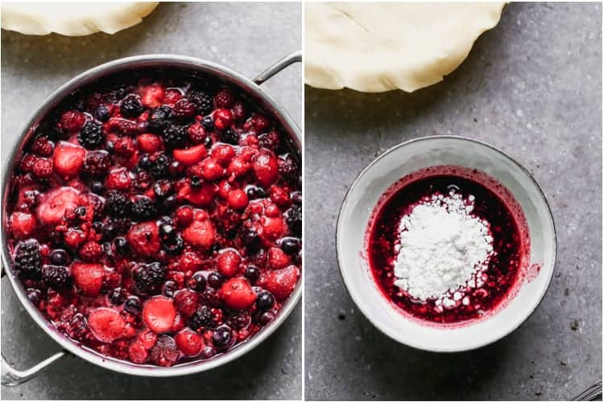
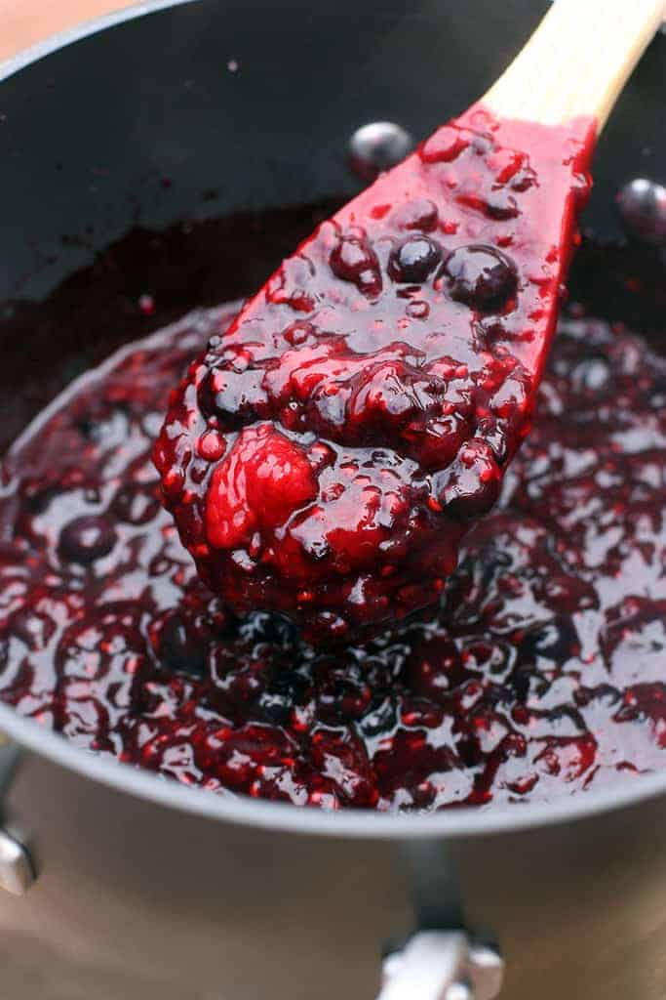
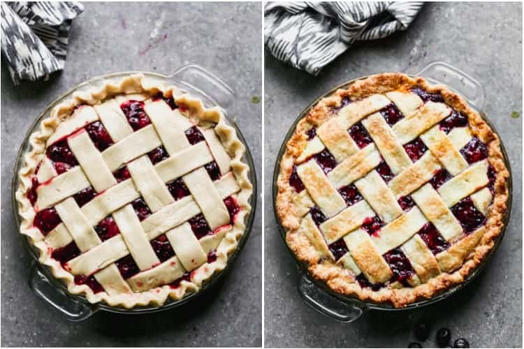
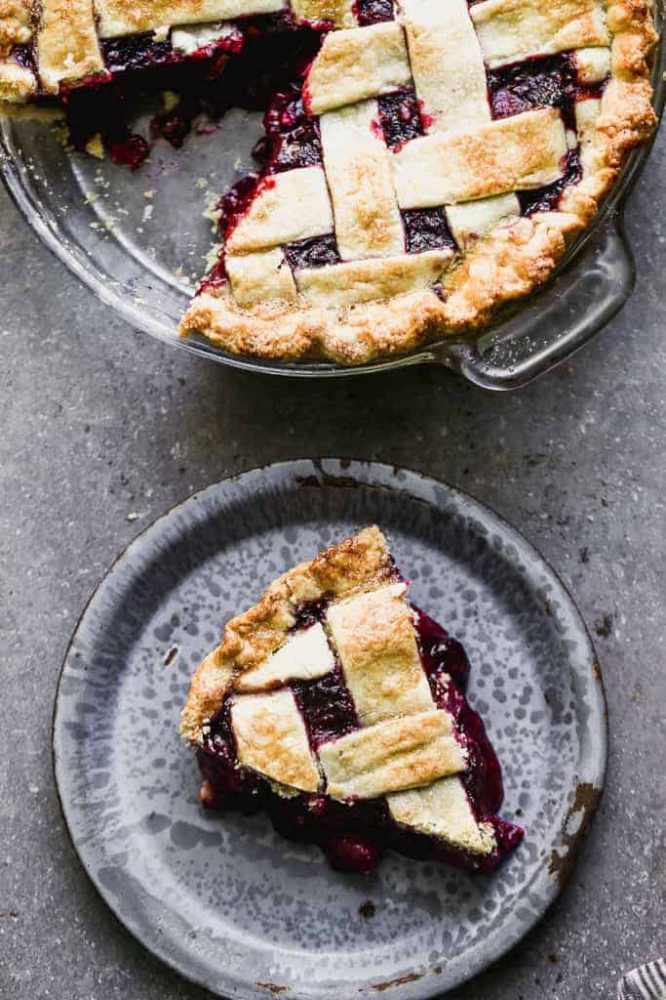
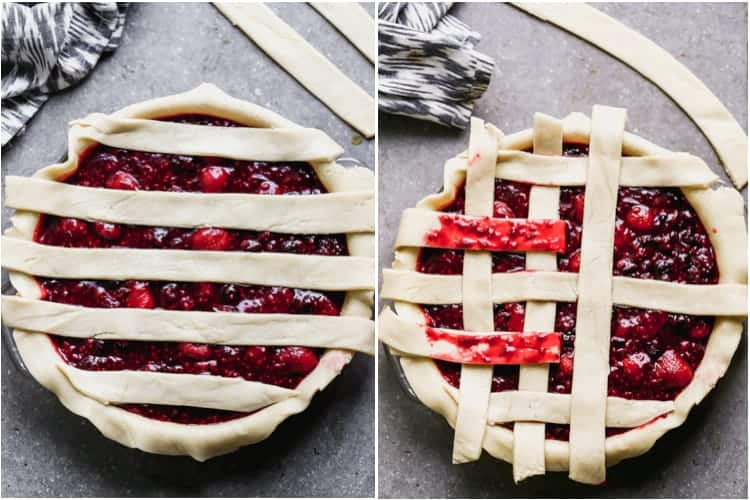

Ingredients
- homemade pie crust for a 9'' deep dish pan. This recipe makes 2 crusts: one for the bottom and one for the to
- 7 cups fresh or frozen raspberries, blueberries and blackberries about 2 % cups of each type of berry
- 1 cup granulated sugar (plus a little extra to sprinkle on top of the pie)
- 1 Tablespoon lemon juice
- 4 Tablespoons cornstarch
- 2 Tablespoons butter
- 1 large egg white beaten with a fork
Instructions
For the Cake:
- Cook berries: Add berries, sugar and lemon juice to a large saucepan over medium heat.
- Simmer, until warm and juicy, about 5-10 minutes, gently stirring occasionally. (You can taste it at this point and see if it's sweet enough for your liking. I don't like to make mine too sweet, but if you want it sweeter you can add 1/4 cup more sugar.)
- Thicken filling: Spoon out about 1/2 cup of the juice from the pan into a bowl. Stir cornstarch into the juice until smooth.
- Bring pot of berries back to a simmer and slowly pour in the cornstarch. Gently stir mixture (being careful not to mash the berries), until thickened, about 2-5 minutes.
- Cool and add to pie shell. Remove from heat and stir in the butter. Allow to cool for 15 minutes. Pour mixture into unbaked pie shell (in a 9 in deep dish pan).
- Add lattice top or a whole top with holes pricked on top for steam to escape. (See directions for lattice crust below).
- Pinch the edges of the top and bottom pie crusts together and crimp the edge, if you like. Brush a thin layer of beaten egg white over the top of the pie and sprinkle lightly with sugar.
- Bake at 400 degrees F for 40-45 minutes. Check it after about 25 minutes and place a piece of tinfoil over it if the top crust is getting too brown.
- Remove to a wire cooling rack and allow to cool for several hours. Once cooled completely, you can cut into it or cover it and refrigerate it overnight to serve the next day.
For the lattice crust:
- Roll out crust. Roll our your crust on a lightly floured counter or on a piece of parchment paper. (I like to place a piece of parchment paper on top of a damp kitchen towel to keep it from moving around). Roll the pie crust into a large circle that's about 1-2 inches larger than then top edge of your pie dish.
- Cut strips. Use a pizza cutter to strips. cut them as wide as you'd like them to be (there's really no right or wrong way).
- Lay first layer of strips. Lay your longest strip across the middle of the pie then lay a few shorter strips on either side, parallel to each other and spaced evenly.
- Fold pack even numbered strips. Fold back the second and 4th strip and lay a shorter strip of dough perpendicular to other dough strips. Unfold those dough strips over the new strip.
- Fold back odd numbered strips: Fold back the first, third and fifth strips in the same direction and lay another dough strip across the pie. Unfold the first, third and fifth strips over the new strip.
- Repeat steps 4 and 5 until pie is covered with a lattice crust.
- Trim dough strips. If you dough strips hang over the edge of the pie, trim them to the edge.
- Pinch crusts together.Pinch the lattice top with the bottom crust to form one unified outer edge. Crimp edges.
Homemade:
How to Make Perfect Berry Pie:
- Cook berries: Simmer berries, sugar and lemon juice in a large saucepan over medium heat until warm and juicy, about 5-10 minutes, gently stirring occasionally. 
- Thicken filling: Spoon out about 1/2 cup of the juice from the pan into a bowl. Stir cornstarch into the juice until smooth. Bring pot of berries back to a simmer and slowly pour in the cornstarch. Gently stir mixture (being careful not to mash the berries), until thickened, about 2-5 minutes.
- Cool. Remove from heat and stir in the butter. Allow to cool for 15 minutes. 
- Add to pie shell: Pour mixture into unbaked pie shell (in a 9 in deep dish pan). Add lattice top or a whole top with holes pricked on top for steam to escape. Pinch the edges of the top and bottom pie crusts together and crimp the edge, if you like.
- Brush with egg wash: Brush a thin layer of beaten egg white over the top of the pie and sprinkle lightly with sugar.
- Bake at 400 degrees F for 40-45 minutes. Check it after about 25 minutes and place a piece of tinfoil over it if the top crust is getting too browned.
- Serve or refrigerate. Remove to a wire cooling rack and allow to cool for several hours. Once cooled completely, you can cut into it or cover it and refrigerate it overnight to serve the next day. 
What sets this Berry Pie apart?
- Less sugar. It has way less sugar than most berry pies. It's still amazingly sweet, but it's not overly sweet, like some berry pies tend to be.
- Holds it's shape. It has the perfect amount of liquid to yield a pie slice that holds its shape. Some berry pies are so juicy that they completely fall apart when you cut into them. This one will turn out beautifully, as long as you let it cool for several hours before cutting into it. 
How to Make a Lattice Crust:
- Roll out crust. Roll our your homemade crust on a lightly floured counter or on a piece of parchment paper. (I like to place a piece of parchment paper on top of a damp kitchen towel to keep it from moving around). Roll the pie crust into a large circle that's about 1-2 inches larger than then top edge of your pie dish.
- Cut strips. Use a pizza cutter to strips. cut them as wide as you'd like them to be (there's really no right or wrong way).
- Lay first layer of strips. Lay your longest strip across the middle of the pie then lay a few shorter strips on either side, parallel to each other and spaced evenly.
- Fold pack even numbered strips. Fold back the second and 4th strip and lay a shorter strip of dough perpendicular to other dough strips. Unfold those dough strips over the new strip.
- Fold back odd numbered strips: Fold back the first, third and fifth strips in the same direction and lay another dough strip across the pie. Unfold the first, third and fifth strips over the new strip.
- Repeat steps 4 and 5 until pie is covered with a lattice crust.
- Trim dough strips.
- Pinch crusts together. Pinch the lattice top with the bottom crust to form one unified outer edge.
- Crimp edges. 
Notes
- To make ahead: This pie can be prepared completely 1 day a head of time. You can also prepare the filling up to 3 months ahead of time and store it in the freezer. Thaw it overnight in the refrigerator before pouring in unbaked pie crust.
- To freeze: You can freeze the baked pie for up to 3 months. Thaw overnight in the refrigerator and allow to come to room temperature before serving.
Nutrition
| Calo: 268kcal | Carbohydrates: 43g | Protein: 2g | Fat: 9g |
| Saturated Fat: 3g | Cholesterol: 5mg | Natri: 138mg | Kali: 80mg |
| Fiber: 3g | Sugar: 24g | Vitamin A: 100IU | Vitamin C: 2.7mg |
| Canxi: 13mg | Iron: 0.9mg |